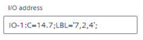

I/O assignment (task)
The I/O assignment task allows you to configure I/O assignments in the application template.
I/O's can be assigned in two ways:
- Individually for each automation station in the I/O assignment tab of the Details pane of a room.
Assigning I/O's (areas) - Per application template in the I/O assignment task.
Assigning I/O's (template)
Do not change the I/O address in Web interface
NOTICE

Data point does not change the status
- The data point freezes at status
Normalor current value when the I/O address is changed online in the web interface.
- The data point can no longer be accessed, and the connection status is .

When making another change, for example, setting the data point to Out of Service, it remains frozen in statusNormalor current value, the connection status changes to and the device must be restarted.
- Change the I/O address offline in ABT Site and download the control program to the device.
1 | Task selector | 2 | Title and toolbar |
3 | Table area (source list and target list) |
|
|
① Task selector
Task | Description |
|---|---|
Application configuration | |
Default values | |
I/O assignment | Current task |
Duplicating and programming |
② Title and toolbar
Command | Description |
|---|---|
Template name | Displays the name of the selected application template. |
Template properties | Opens a dialog box to modify the properties of the application template. |
Application help | Opens the help for the selected application template or application type. The command is only active if a help is available. |
Category | Drop-down list where you can filter for the defined button type, e.g., LgtBtn, BlsBtn. |
Assign | Assigns the selected I/O in the source list to the selected actuator in the target list. |
Clear all assignments | Clears all I/O assignments. |
Reset to type | Resets the I/O assignment to the default I/O assignment of the application type. |
③ Table area (source list and target list)
Column | Description |
|---|---|
Area | Defined room or room segment. |
Description | Description of the button (I/O) or button collection. |
Input / Output | Name of the I/O for example a button or sensor. |
Actuator / IO | Name of the actuator or button collection. |
Select an I/O and an actuator and click Assign to assign I/O's.
Click Remove to remove the selected I/O assignment.
Click Clear to remove all I/O assignments of the button collection.
Click Reset to reset the selected button collection to the settings of the application template.
The buttons are located in the Description column of the target table next to assigned I/O's and button collections.
Initially the source and target lists are read from the application type and application template. The application type defines an auto-connect rule, typically a one-to-one connection between source and collection, e.g., LgtBtn(1) and LgtBtnCol. Assignments with auto-connect rules are marked by the icon.